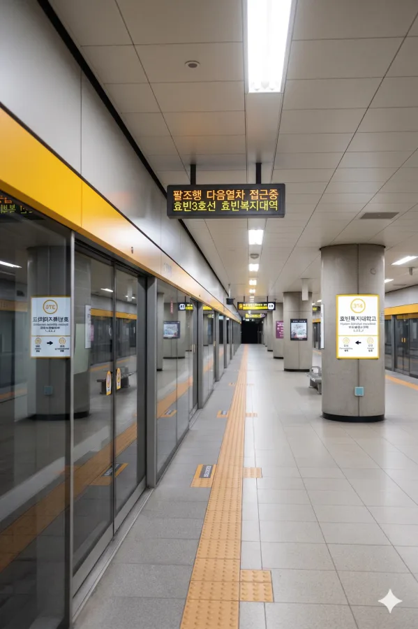

1. 개요
효빈 도시철도 3호선 314번. 효빈광역시 서구 사복동 97 소재.
사실 학교 이름보다 '사복' 드립으로 더 유명하다(...)
2. 역 정보
1994년 개업 당시부터 사복동 주민들과 인근 대학생들의 발이 되어주고 있는 역이다. 지하 2층 규모의 평범한 지하역사지만, 출퇴근 시간과 등하교 시간에는 꽤나 북적인다.
3. 역 주변 정보
주변은 주로 주거단지와 복지 특화 기관, 그리고 다양한 학교들로 촘촘하게 채워져 있다. 역세권에 효빈복지대학교를 비롯하여 국립 박물관과 연구 시설들이 밀집해 있어 학생과 복지 종사자들의 유동인구가 매우 높다.
3.1. 출구 정보
 효빈복지대학역 출구 정보
효빈복지대학역 출구 정보
|
||
|---|---|---|
| 번호 | 주요 시설 및 방향 | 비고 |
| 1 | 효빈복지대학교, 효빈복지대학교 복지관 (서구 사복동 29), 한국복지연구원, 사복휴먼시아 3단지 (서구 사복1동), 국립효빈복지박물관, 당선지하상가 연결 | 대학 및 국립 복지 인프라 |
| 2 | 효빈복지여고, 효빈복지고, 효빈인권사무소, 서구 수어통역센터 (서구 사복동 43-1), 사복휴먼시아 2단지 (서구 사복1동), 사복1동 행정복지센터 | 학교 및 인권/수어 통역 시설 |
| 3 | 스퀘어시티 아파트, 서구 미래환경·생태뮤지엄 & 서구 트램 역사관, 빈스마트 사복점(SSM) (371m), 고송5동 행정복지센터 | 대단지 아파트 및 마트/뮤지엄 |
4. 일평균 이용객
대학가 수요 덕분에 이용객 수가 상당히 안정적이다. 코로나 시기에 주춤했으나 2022년 이후 완벽히 회복했다.
|
효빈복지대학역 이용객 통계
| ||
|---|---|---|
| 연도 | 일평균 이용객 | 비고 |
| 2020년 | 23,721명 | |
| 2021년 | 23,501명 | |
| 2022년 | 31,323명 | |
| 2023년 | 32,345명 | |
| 2024년 | 32,122명 | |
5. 승강장

| 청능 ↑ | ||||
| 하 | ㅣ | ㅣ | 상 | |
| ↓ 과진 | ||||
| 상 |
효빈 도시철도 3호선 (상행 완행/급행 공용)
|
팔조 방면 (급행 정차) |
| 하 |
효빈 도시철도 3호선 (하행 완행/급행 공용)
|
효빈국제공항 방면 (급행 정차) |
6. 연계 교통
| 구분 | 정류소명 | 노선 번호 |
|---|---|---|
| 순방향 | 효빈복지대역 | 232, 291 |
| 역방향 | 효빈복지대역(건너편) | 921, 322 |
7. 당선지하상가
효빈광역시 서구의 심장부인 당선동과 사복동 지하를 무려 1,132m라는 무식한 길이로 관통하는 매머드급 지하도상가. 효빈시설관리공단에서 관할하고 있다. 단순한 지하상가를 넘어 갤러리아 효빈점과 이마트 사복점이라는 거대 상업 시설을 지하로 직결시켜 주는 서구 최대의 '지하 던전'이자 실내 통행로다. 효빈복지대역은 이 거대한 지하 하이웨이의 한쪽 끝을 든든하게 받치고 점령하고 있다.
7.1. 개요 및 구조
- 초대형 환승 거점인 효빈 2, 5호선 당선역에서 시작하여, 3호선 효빈복지대역까지 끊김 없이 일직선으로 이어진다.
- 서구의 핵심 번화가이자 효빈대학교(당선캠퍼스) 상권인 당선역 일대와, 거대한 복지 타운이 형성된 사복동(효빈복지대역) 일대를 잇기 위해 조성되었다. 1km가 훌쩍 넘는 길이를 자랑하다 보니 이 끝에서 저 끝까지 걸어가는 것 자체가 훌륭한 유산소 운동이 된다.
- 초장축 일자(一)형 + 알파 구조: 기본적으로 당선대로 지하를 따라 쭉 뻗은 통로지만 대형 앵커 시설들과 거미줄처럼 엮여 있다. 특히 메인 노드 3 (효빈복지대역 로비)는 3호선 대합실과 자연스럽게 이어지며, 휠체어 이용자와 어르신들을 위한 초대형 엘리베이터가 집중 배치되어 있다.
7.2. 상권 특성 (그라데이션 상권)
상가 내부 점포들은 위치에 따라 극단적인 그라데이션 양상을 보인다.
- 당선역 & 갤러리아 구간 (20대/서브컬처 중심): 지하상가의 반대편 끝. 효빈대 학생들과 오타쿠들의 성지. 가챠샵, 애니 굿즈샵, 트렌디한 프랜차이즈 카페들이 밀집해 있다.
- 중간 완충 구역: 보세 옷가게, 다이소, 소규모 푸드코트가 자리잡아 1km 걷기 코스에서 휴식처 역할을 한다.
- 효빈복지대역 & 이마트 구간 (실버/생활밀착형): 바로 이 역 부근의 상권. 사복동 복지 타운의 영향을 강하게 받아, 등산복 전문점, 의료기기 상사, 건강식품 판매점, 돋보기 안경점 등의 비중이 급격히 늘어난다. 이마트 카트를 끌고 가기 편하도록 경사로가 잘 조성되어 있으며, 복지대 학생들을 겨냥한 가성비 밥집들도 포진해 있다.
7.3. 당선역과의 연계 및 특징
이 거대한 터널의 가장 큰 메리트는 당선역(2, 5호선)과 효빈복지대역(3호선) 간의 완벽한 실내 간접 환승을 가능케 한다는 점이다. 여름철 폭염이나 겨울철 폭설이 내릴 때, 주민들은 지상 도로를 버리고 이 거대한 지하 하이웨이로 쏟아져 내려와 안전하게 역에서 역으로 이동한다.
이곳은 단일 지하상가 안에서 '오타쿠와 어르신들의 기묘한 공존'을 볼 수 있는 전 세계 유일무이한 공간이다. 당선역 쪽에서는 이타백을 멘 효빈대생과 코스플레이어들이 가챠를 까고 있고, 거기서 15분 정도만 걸어오면 효빈복지대역 근처에서 트로트를 들으며 건강 팔찌를 고르는 어르신들을 마주치게 된다. 지하상가 전체가 인생의 생애 주기를 보여주는 거대한 세트장 같다는 평을 받는다.
7.4. 시설 관리 및 여담
- 효빈시설관리공단에서 관리하며, 길이가 무려 1,132m에 달하다 보니 공단 미화원이나 경비원들이 소형 전기 카트를 타고 순찰하는 진풍경을 볼 수 있다. 공기청정기가 쉴 새 없이 돌아가며, 복지대역 쪽 화장실은 거동이 불편한 어르신들을 위해 안전바와 미끄럼 방지 타일이 도배되어 있는 등 구역별 맞춤형 관리가 철저하다.
- 당선동 출신인 박효빈 시장이 학창 시절 밥 먹듯이 걸어 다니던 곳으로 유명하다. "한여름에 당선역에서 에어컨 바람 맞으며 복지대역까지 걸어가면 땀 한 방울 안 흘리고 동네를 건넜다"고 극찬했다.
- 매년 HAF(효빈 애니메이션 페스티벌)가 열리면 이곳은 코스플레이어들의 런웨이가 된다. 당선역(베르데 홀)에서 행사를 즐기던 덕후들이 밥을 먹거나 더위를 식히려 지하상가로 물밀듯이 내려와, 효빈복지대 인근 어르신들과 서로 신기하게 쳐다보는 훈훈하고 웃픈 광경이 매년 펼쳐진다.
1,132m라는 무식한 길이 탓에 가끔 "당선역에서 복지대역까지 달리기 내기"를 하는 대학생들이 출몰하는데, 바닥 대리석이 미끄러운 편이라 넘어지면 크게 다치기 십상이라 순찰 도는 공단 직원들의 요주의 타겟 1순위다.
8. 기타 및 여담
• '사복(Sabok)' 유니버스에 갇힌 역: 역명은 인근의 효빈복지대학교에서 따왔으며, 행정구역상 사복동에 위치한다. 이 '사복'이라는 지명 하나가 세 가지 의미로 얽히고설킨 기막힌 우연을 만들어냈다.
- 원래 의미 (四福): 예로부터 네 가지 복이 들어오는 명당이라 하여 **'사복(四福)골'**이라 불렸다.
- 대학의 위치 (社福): 그런데 하필이면 사회복지 특성화 대학인 효빈복지대학교가 이 동네에 들어섰다. 사람들은 "사회복지를 줄이면 **'사복(社福)'**인데, 사복동에 사복대가 있다니 노린 거 아니냐"며 이 절묘한 위치 선정에 감탄했다.
학교 측은 우연이라고 밝혔다만 아무도 안 믿는다(...) - 패션의 성지 (私服): 역 앞에 대학이 있으니 당연히 교복을 벗은 대학생들이 사복(私服, Plain Clothes) 차림으로 쏟아져 나왔다. 이를 본 서브컬처 팬들이 **"사복동이라더니 진짜 다들 사복만 입고 다니네"**라며 드립을 치기 시작했고, 이것이 유행이 되어버렸다.
• 사복 패션의 성지: 이러한 드립이 발전하여, 현재는 팬들이 이 역을 방문할 때 **"최애 캐릭터의 사복 패션을 코스프레하고 인증샷을 찍는 곳"**으로 정착되었다. 덕분에 역 주변에는 대학생과 코스어들을 겨냥한 빈티지 의류 샵, 옷 수선집, '인생네컷' 사진관 등이 우후죽순 생겨나며 독특한 '사복 패션 거리'가 형성되었다. 실제로 사복을 입고 가면 아무도 신경 안 쓰지만 코스프레를 하면 모두가 쳐다본다
• 대학가의 낭만: 효빈복지대 학생들의 통학 수요가 절대적이다. 주머니 가벼운 대학생들을 위한 가성비 식당과 술집이 많아, 저녁이면 젊음의 열기로 시끌벅적하다. 3호선 서구 구간 중 가장 활기찬 역이다.
- 국립효빈복지박물관의 4D 체험 특전(?): 1번 출구 인근에 위치한 국립효빈복지박물관은 효빈시의 막강한 복지 인프라를 상징하는 곳이다. 그런데 이 박물관 건물 지하 깊은 곳을 3호선 급행 열차와 일반철도 강빈선 열차가 관통하다 보니, 전시실에서 조용히 관람을 하다 보면 발바닥을 타고 육중한 진동이 스멀스멀 올라오는 독보적인 현상을 겪게 된다. 박물관 측은 이를 숨기기는커녕 오히려 '전국 유일의 지하철 4D 체험 박물관'이라고 포장하여 아이들의 현장학습 코스로 써먹고 있다.
물론 사정을 모르는 외지인들은 지진이 난 줄 알고 비상구로 튀어나가는 웃지 못할 촌극이 분기마다 한 번씩 벌어진다. - 사복휴먼시아 단지 간의 미묘한 기싸움: 1번 출구 앞의 사복휴먼시아 3단지와 2번 출구 앞의 사복휴먼시아 2단지 주민들 사이에는 알게 모르게 묘한 자존심 싸움이 존재한다. 3단지 측은 역 출입구와 당선지하상가가 바로 연결되는 '초역세권'임을 내세우며 은근한 우월감을 뽐내고, 2단지 측은 효빈복지고와 효빈복지여고를 코앞에 둔 '초품아/고품아' 명문 학군 입지임을 자랑하며 맞선다. 명절이나 선거철만 되면 양쪽 아파트 부녀회가 역 대합실 양끝에서 홍보용 물티슈를 경쟁적으로 나눠주며 세력을 과시하는 것이 효빈복지대역만의 오랜 전통으로 굳어졌다.
- 한국복지연구원과 대학생들의 지독한 애증: 역 1번 출구 방면에 자리한 한국복지연구원은 대한민국 복지 정책의 싱크탱크 역할을 하는 핵심 국가 기관이다. 하지만 효빈복지대학교 재학생들에게 이곳은 그야말로 '과제의 무덤'이자 '실습의 지옥'으로 통한다. 전공 교수님들이 툭하면 "연구원에 가서 최신 발간 자료를 요약해오라"거나 "연구원 정기 세미나를 듣고 비평문을 제출하라"는 악랄한 과제를 내주기 때문이다.
덕분에 과제 마감일 전날 연구원 1층 로비에서는 노트북을 켜놓고 다크서클이 턱 끝까지 내려온 복지대생들의 좀비 떼를 심심찮게 목격할 수 있다. - 빈스마트 사복점의 미친 가성비와 매일 밤의 오픈런: 3번 출구에서 약 371m 떨어진 곳에 위치한 빈스마트 사복점(SSM)은 주머니 사정이 가벼운 자취생들과 인근 대단지 주부들의 진정한 성지다. 특히 매일 저녁 8시에 시작되는 '신선식품 마감 타임세일'이 다가오면, 역에서 쏟아져 나온 사람들이 좀비 영화의 한 장면처럼 카트를 끌고 빈스마트로 전력 질주하는 장관이 펼쳐진다. 50% 할인 딱지가 붙은 연어 초밥과 마늘 닭강정을 쟁취하기 위해 벌어지는 대학생과 아주머니들의 눈치 싸움과 치열한 육탄전은 효빈시 서구의 진정한 생활 스포츠라고 불릴 지경이다.
- 서구 수어통역센터 앞의 따뜻한 출근길 풍경: 2번 출구 방면 사복동 43-1에 위치한 서구 수어통역센터 덕분에, 이 역은 전국 도시철도 역사 중에서 휠체어 리프트, 시각장애인 유도 블록, 음성 안내 시스템이 가장 완벽하고 깔끔하게 관리되는 곳으로 꼽힌다. 역무원들도 모두 기본적인 수어 인사와 안내가 가능하도록 의무 교육을 받는다. 가끔 이른 아침 출근길에 수어로 밝게 인사를 나누며 미소 짓는 농인들과 역무원들의 모습이 지역 민방의 미담 다큐멘터리에 단골로 등장하여 시청자들의 눈시울을 붉히게 만든다.
- 미래환경·생태뮤지엄과 트램 역사관의 기묘한 짬짜면 큐레이팅: 3번 출구 방면에는 '서구 미래환경·생태뮤지엄'과 '서구 트램 역사관'이 한 건물에 입주해 있다. 1층 전시실에서 멸종 위기종 수원청개구리 생태 모형을 열심히 구경하고 2층으로 올라가면, 뜬금없이 효빈시의 과거 노면전차(트램) 디오라마와 승차권 펀칭기가 튀어나오는 종잡을 수 없는 짬짜면식 큐레이팅이 특징이다. 주말만 되면 곤충 채집에 환장하는 유치원생들을 데려온 지친 부모님들과, 트램 구동음을 녹음하러 온 장비 빵빵한 철도 동호인(철덕)들이 한 공간에 섞여 각자의 덕질에 극도로 집중하는 기이한 진풍경을 감상할 수 있다.
- 효빈인권사무소 앞 광장의 1인 시위 연대 의식: 지역 내 인권 관련 민원과 구제 절차를 총괄하는 효빈인권사무소가 2번 출구 근처에 있다 보니, 역 앞 광장은 365일 내내 각종 1인 시위와 서명 운동, 릴레이 피케팅의 핫플레이스로 자리 잡았다. 워낙 다양한 성향의 단체들이 매일같이 출근 도장을 찍다 보니, 나중에는 시위자들끼리 묘하게 안면을 트고 점심시간에 역 앞 순대국밥집에서 자연스럽게 합석을 하거나, 추운 겨울날 서로 따뜻한 캔커피를 건네며 핫팩을 공유하는 등 어딘가 훈훈하면서도 기괴한(?) 대통합 연대 의식이 형성되기도 한다.
- 당선지하상가를 질주하는 효빈대생들의 아침 러시: 1번 출구와 직접 연결된 당선지하상가는 총길이가 1,132m에 달하는 엄청난 규모를 자랑한다. 아침 1교시 전공 수업에 지각할 위기에 처한 효빈대학교 학생들이, 바깥의 신호등 대기 시간을 아끼겠다며 2호선 당선역에서부터 이곳 효빈복지대역까지 우사인 볼트에 빙의하여 지하상가 복도를 전력 질주하는 눈물겨운 레이스가 매일 아침 펼쳐진다.
덕분에 상가 바닥 대리석이 마찰로 닳아 없어질 지경이라며 시설관리공단 미화원 아주머니들의 깊은 한숨이 지하를 맴돈다. - 효빈복지대학교 복지관 구내식당의 무한리필 전설: 1번 출구 방면 사복동 29에 위치한 효빈복지대 복지관 내 학생식당은 '가성비 뷔페'로 동네 어르신들 사이에서 알음알음 소문이 났다. 단돈 4,500원(학생가)에 제육볶음과 수제 돈까스를 산더미처럼 무제한으로 퍼먹을 수 있다는 사실이 동네 경로당과 맘카페를 통해 쫙 퍼지면서, 점심시간만 되면 전공책을 든 대학생들 반, 형형색색의 등산복 차림을 한 동네 어르신들 반으로 식당이 완벽하게 꽉 차버린다. 총학생회에서 밥이 너무 빨리 동난다며 외부인 출입 통제를 건의하기도 했지만, 하필 학교 이름이 '복지' 대학교인지라 차마 내치지 못하고 학교 측도 난감하게 웃으며 방관하고 있는 중이다.
- 3호선 급행열차의 공포의 통과역 밈과 환승 똥꼬쇼: 효빈복지대역은 수요가 워낙 탄탄해 3호선 급행열차가 필수적으로 정차하는 혜택을 누린다. 하지만 바로 다음 역이자 완행 열차만 서는 간이역(청능역, 과진역 등) 주민들에게는 부러움과 질투의 대상이다. 급행열차가 복지대역에 정차할 때마다 완행역 주민들은 "아, 나도 여기서 급행 타고 한 번에 팔조역까지 쏴버리고 싶다"며 구청에 급행 정차 민원을 쉴 새 없이 넣는다. 특히 시험 기간에 늦잠을 잔 청능역 인근 대학생들이 급행을 타기 위해 오히려 반대 방향인 복지대역까지 마을버스를 타고 역주행해서 환승을 시도하는 눈물겨운 등교 똥꼬쇼가 매일 아침 심심찮게 벌어지고 있다.